Log a query · the committed shots beside this branch
A pixel counts as different when a channel differs by more than 40 of 255; the build's shot is drawn at the reference's width. The committed shots are Log a query v2's (23 Nov, before v2.1–v2.3 and before Record a response v2); the rerun is this branch. A difference can come from any of those releases, so read the slider screens (08, 09, 14, 100/150-step5) for the slider.
01-agent-step
0%
02-agent-not-found
not captured
03-add-agent-in-the-journey
0%
04-sent-step-with-not-sent-link
0.2%
05-not-sent-yet
2.4%
06-catching-up-materials-nothing-on-card
0%
07-pieces-named-sample-open
0%
08-nudge-no-response-time
0.3%
09-nudge-past-the-date
0.1%
10-review-past-the-date
7%
100-step2-sent
0.2%
100-step3-materials
0%
100-step4-how
0%
100-step5-nudge
0.6%
100-step6-log
10%
11-logged-past-the-date
3.7%
12-materials-what-they-ask-for
0%
13-leave-check
0.2%
14-nudge-from-card
0.6%
15-review
10%
150-step2-sent
0.4%
150-step3-materials
0%
150-step4-how
0%
150-step5-nudge
0.2%
150-step6-log
11.6%
16-review-paperclip-open
not captured
17-after-log-and-start-another
0%
18-logged-close-if-no-reply
4.1%
19-pieces-nothing-saved
0%
20-review-no-date-no-reminder
9.6%
21-logged-no-date-no-reminder
4.3%
22-materials-no-packages-skips-the-tiles
0%
seam-100
not captured
seam-110
not captured
seam-125
not captured
seam-150
not captured
01-agent-step · 0% of pixels differ
ReferenceBuild (540×868)Diff (red: differs)
02-agent-not-found · not captured
Reference
No build shot.
03-add-agent-in-the-journey · 0% of pixels differ
ReferenceBuild (540×868)Diff (red: differs)
04-sent-step-with-not-sent-link · 0.2% of pixels differ
ReferenceBuild (540×868)Diff (red: differs)
05-not-sent-yet · 2.4% of pixels differ
ReferenceBuild (540×868)
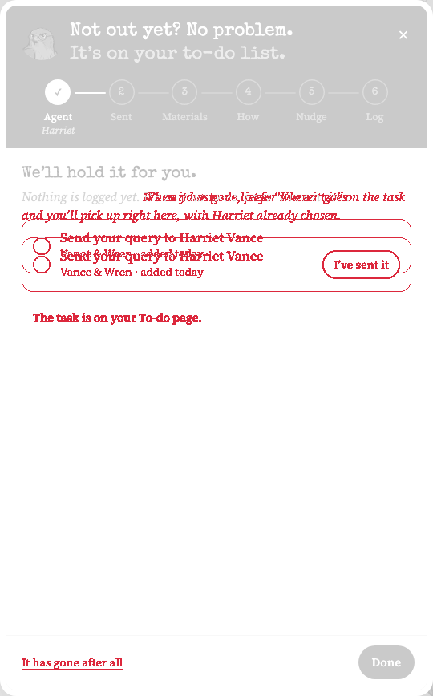
Diff (red: differs)
06-catching-up-materials-nothing-on-card · 0% of pixels differ
Reference
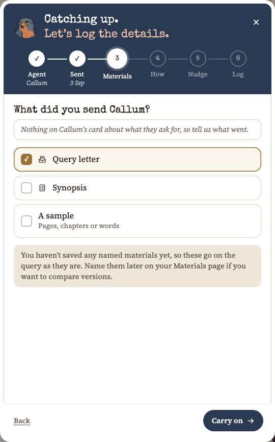
Build (540×868)Diff (red: differs)
07-pieces-named-sample-open · 0% of pixels differ
Reference
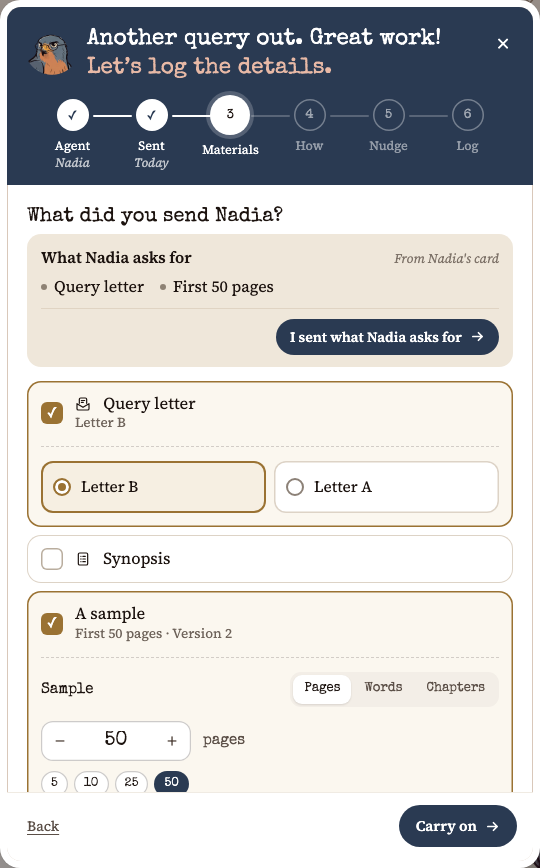
Build (540×868)
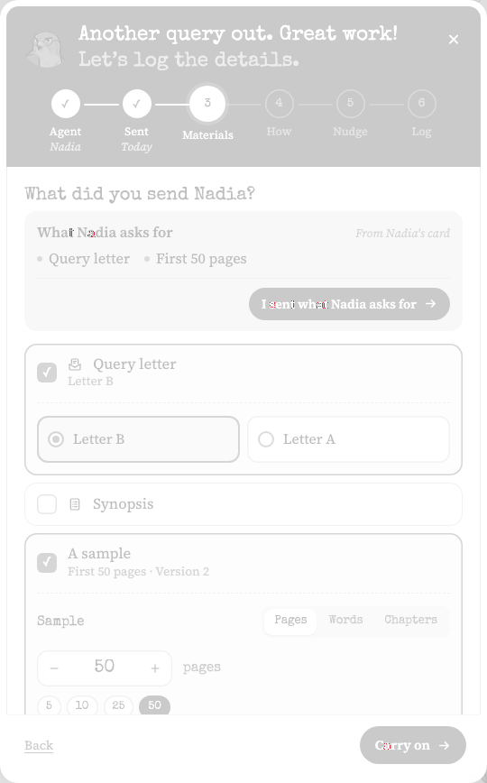
Diff (red: differs)
08-nudge-no-response-time · 0.3% of pixels differ
ReferenceBuild (540×868)Diff (red: differs)
09-nudge-past-the-date · 0.1% of pixels differ
ReferenceBuild (540×868)Diff (red: differs)
10-review-past-the-date · 7% of pixels differ
ReferenceBuild (540×868)
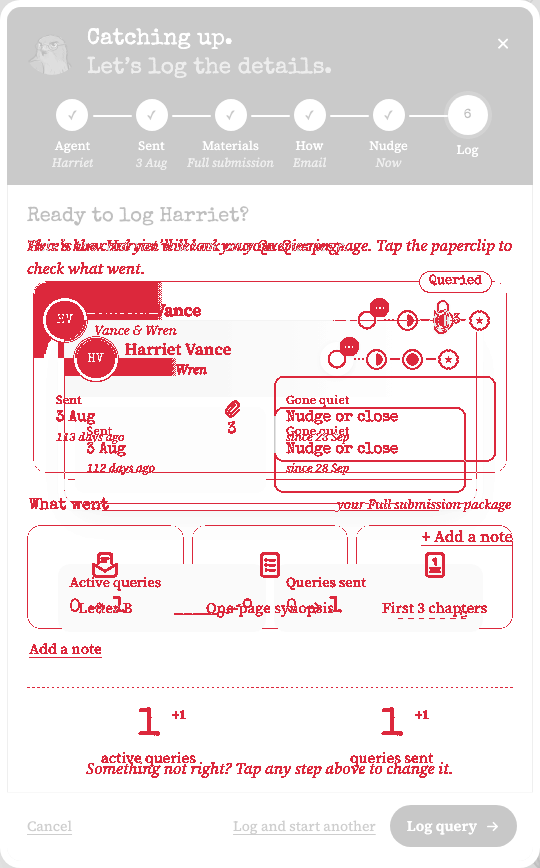
Diff (red: differs)
100-step2-sent · 0.2% of pixels differ
ReferenceBuild (540×868)
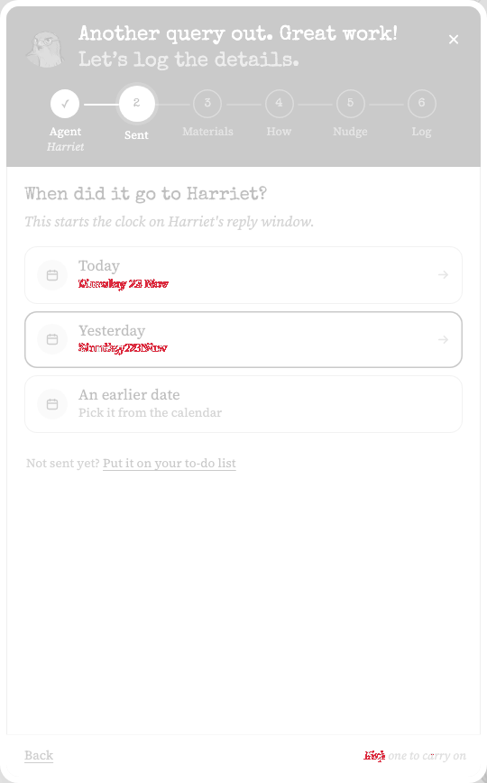
Diff (red: differs)
100-step3-materials · 0% of pixels differ
Reference
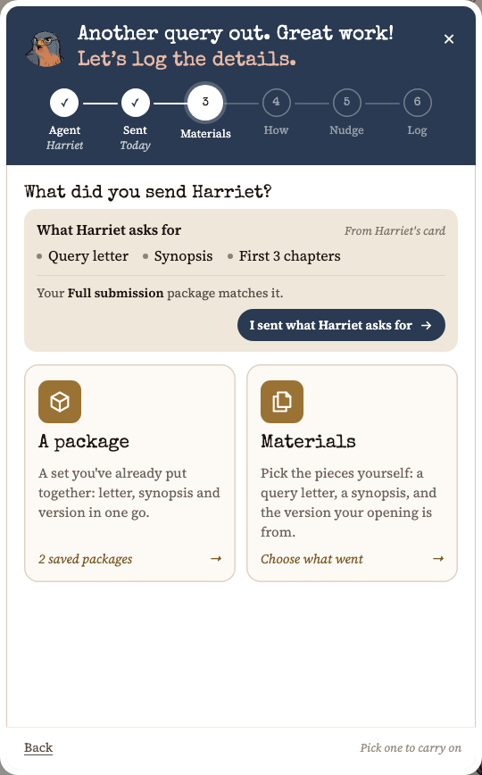
Build (540×868)
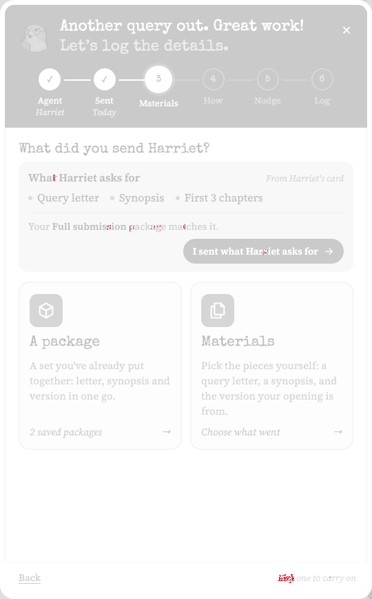
Diff (red: differs)
100-step4-how · 0% of pixels differ
ReferenceBuild (540×868)Diff (red: differs)
100-step5-nudge · 0.6% of pixels differ
ReferenceBuild (540×868)Diff (red: differs)
100-step6-log · 10% of pixels differ
ReferenceBuild (540×868)Diff (red: differs)
11-logged-past-the-date · 3.7% of pixels differ
ReferenceBuild (540×868)Diff (red: differs)
12-materials-what-they-ask-for · 0% of pixels differ
ReferenceBuild (540×868)Diff (red: differs)
13-leave-check · 0.2% of pixels differ
ReferenceBuild (540×868)
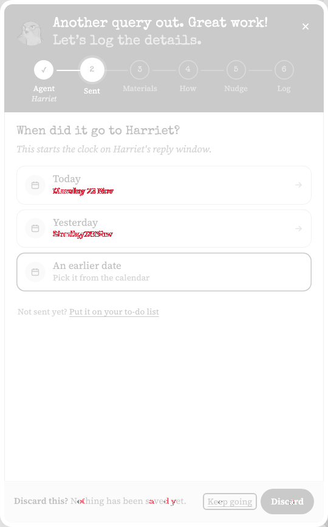
Diff (red: differs)
14-nudge-from-card · 0.6% of pixels differ
ReferenceBuild (540×868)Diff (red: differs)
15-review · 10% of pixels differ
ReferenceBuild (540×868)Diff (red: differs)
150-step2-sent · 0.4% of pixels differ
ReferenceBuild (756×852)
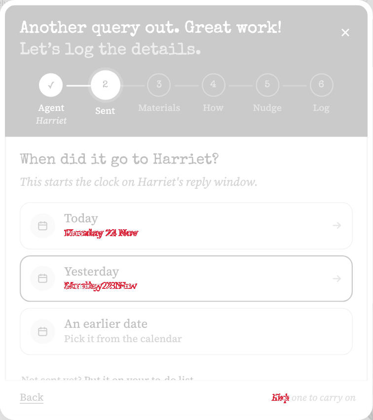
Diff (red: differs)
150-step3-materials · 0% of pixels differ
ReferenceBuild (756×852)Diff (red: differs)
150-step4-how · 0% of pixels differ
ReferenceBuild (756×852)Diff (red: differs)
150-step5-nudge · 0.2% of pixels differ
ReferenceBuild (756×852)Diff (red: differs)
150-step6-log · 11.6% of pixels differ
ReferenceBuild (756×852)Diff (red: differs)
16-review-paperclip-open · not captured
Reference
No build shot.
17-after-log-and-start-another · 0% of pixels differ
ReferenceBuild (540×868)Diff (red: differs)
18-logged-close-if-no-reply · 4.1% of pixels differ
ReferenceBuild (540×868)Diff (red: differs)
19-pieces-nothing-saved · 0% of pixels differ
ReferenceBuild (540×868)
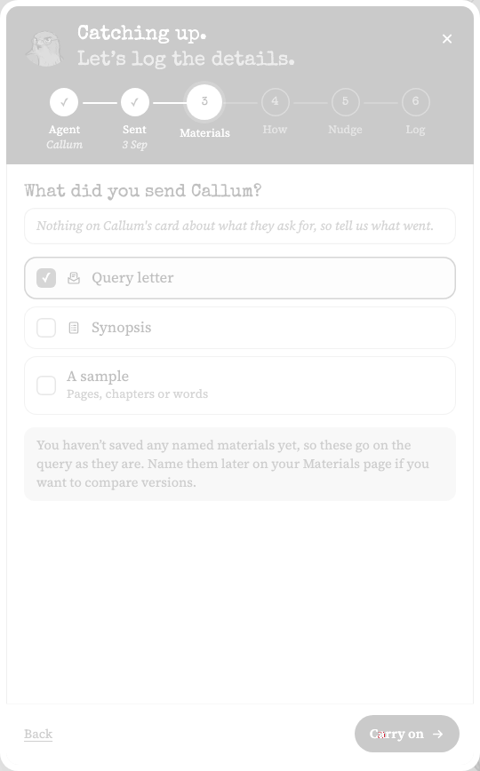
Diff (red: differs)
20-review-no-date-no-reminder · 9.6% of pixels differ
ReferenceBuild (540×868)
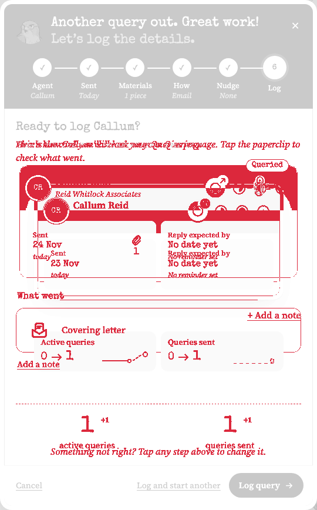
Diff (red: differs)
21-logged-no-date-no-reminder · 4.3% of pixels differ
ReferenceBuild (540×868)Diff (red: differs)
22-materials-no-packages-skips-the-tiles · 0% of pixels differ